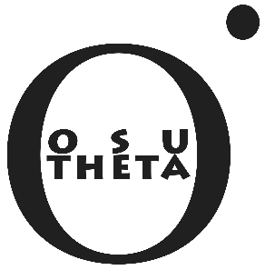

J. G. Fernández-Trincado
Office: Institut UTINAM - UMR CNRS 6213, France
Email: jfernandez@obs-besancon.fr
I'm currently a Phd. student at the Université de Franche-Comté - UFC, Besancon, France.
My research interests are: GAIA data analysis using Galaxy Modelling, Stellar populations, Structure of the Galaxy, Galactic kinematics and dynamics, test-particle simulations and the validity of analytical results, and large sky surveys, Bullet Groups and gravitational lensing; Variability in Quasars, variability survey's: SX Phoenicis stars, and RR Lyrae stars as tracers of old populations and stellar streams around globular cluster and dwarf galaxy.
I am the PI of three recent observational projects: [1] At the study of the Kinematics of the Stellar Halo of the Milky Way, primarily analysing column density QSO absorbers. [2] Photometric survey of RR Lyrae stars around of globular cluster NGC104(47 Tucanae). [3] ESO.
I am also member of the "M-, L- and T-dwarf Archive for Astrophysics" (MAIA), SDSS-III collaboration, DPAC-CU9 collaboration, and member of the European Astronomical Society .
____________________________________________________________________________________________________________________________________________________________________Affiliations
 |
 |
 |
|  |  |